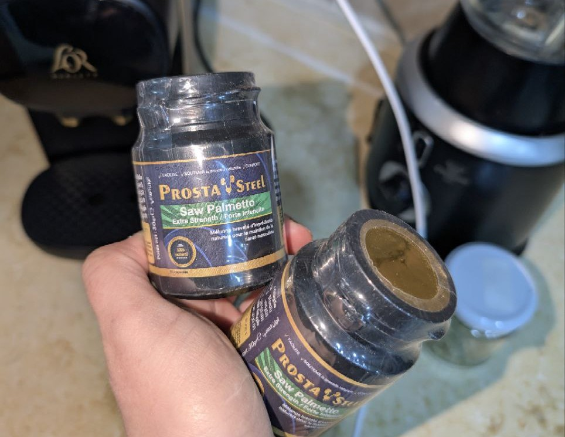
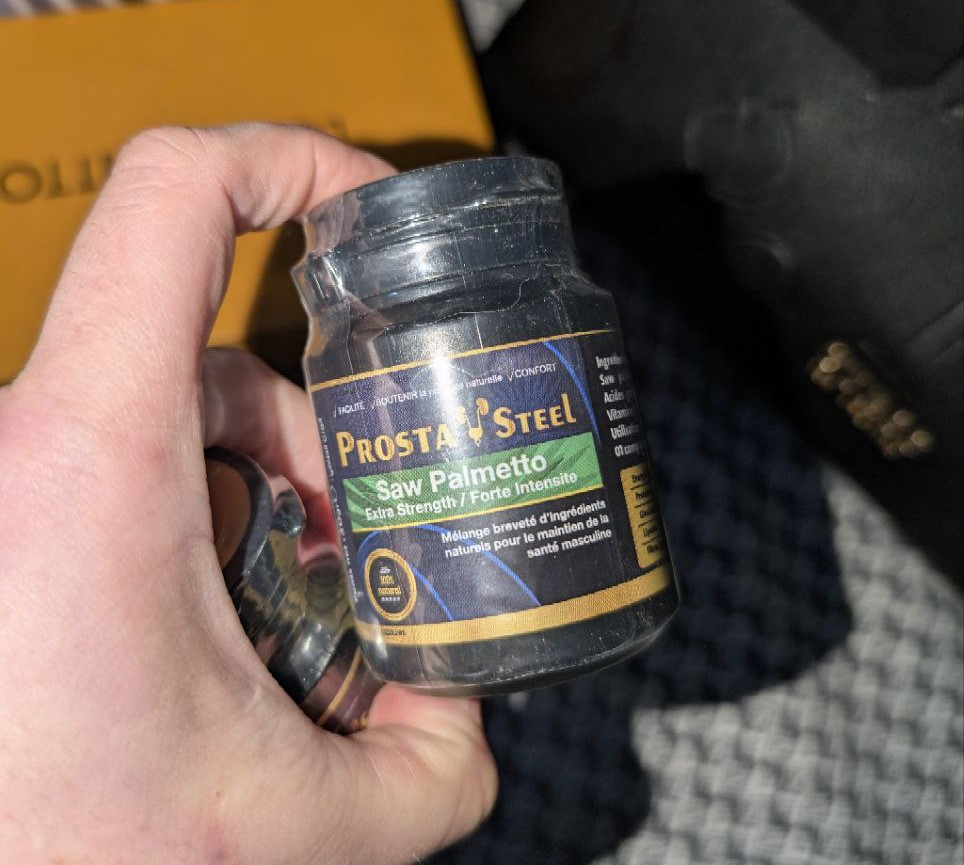

Meilleur fortifiant naturel 100 % pour l’érection adapté à tous les âges
Nous vous recommandons ce produit :
Voici Prosta Steel, la solution recherchée par des millions d’hommes
Vous souffrez de problèmes de prostate comme des envies fréquentes d’uriner ou une sensation de vidange incomplète ? Ne vous inquiétez pas, avec Prosta Steel, bénéficiez d’un soutien naturel et efficace pour la santé prostatique.
Prosta Steel
Avantages de Prosta Steel
- Soutient la santé de la prostate et améliore le confort urinaire.
- Solution efficace pour les troubles liés à la prostate.
- Favorise une meilleure circulation sanguine dans la région pelvienne.
- Aide à réduire la fréquence des envies d’uriner et améliore la qualité de vie.
- Résultats visibles rapidement après utilisation régulière.
Avis des clients sur Prosta Steel
Prosta Steel a reçu d’excellentes évaluations sur les sites de commerce en ligne ; la majorité des avis louent son efficacité pour soutenir la santé prostatique, réduire l’inconfort et améliorer le bien-être général.
Prix de Prosta Steel
Prosta Steel est disponible au prix de
Mode d’emploi de Prosta Steel
Prendre une capsule par jour avec un verre d’eau. Les effets positifs s’observent après une utilisation régulière.
Le papyrus Ebers égyptien datant de 1600 avant J.-C. documentait le traitement de plus de 800 maladies ; parmi elles, certains traitements oraux et topiques pour les troubles prostatiques. Les savants musulmans ont également fourni de grands efforts pour trouver des solutions radicales à ces problèmes dérangeants et pénibles à cette époque. Suivez-nous sur notre site pour découvrir le meilleur complément naturel pour la santé de la prostate, 100 % naturel et sûr pour tous les hommes de tous âges.
Causes des troubles prostatiques
Les troubles de la prostate peuvent entraîner des symptômes variés, tels que des difficultés urinaires, douleurs, et impact sur la qualité de vie sexuelle. Comprendre la cause sous-jacente est essentiel pour trouver un traitement adapté. Plusieurs études ont identifié les causes les plus courantes :
- Déséquilibre hormonal.
- Effets secondaires de certains médicaments.
- Maladies cardiovasculaires.
- Taux élevé de cholestérol sanguin.
- Obésité ou diabète.
- Facteurs psychologiques tels que stress, anxiété, ou dépression.
Stratégies de traitement des troubles prostatiques
Les troubles prostatiques peuvent être traités par différentes méthodes telles que :
- Compléments à base de plantes ou ingrédients naturels.
- Traitements médicaux et interventions physiques.
- Médicaments oraux prescrits par un médecin.
- Crèmes ou pommades topiques spécifiques.
Les stratégies de traitement varient selon :
- La cause principale des troubles prostatiques.
- L’état de santé général du patient.
- La volonté du patient.
La volonté du patient est l’un des critères les plus importants pour choisir un traitement. Certains préfèrent les crèmes topiques, tandis que d’autres optent pour les compléments oraux. En fin de compte, c’est au médecin traitant de décider de la meilleure solution pour vous.
Voici le meilleur complément naturel pour la prostate disponible en pharmacie et en ligne
Nous vous présentons ci-dessous une liste des meilleurs compléments naturels pour la santé prostatique, totalement sûrs et sans effets secondaires :
1. Capsules Prosta Steel – Le meilleur complément naturel pour la prostate
Les capsules Prosta Steel, produites par la société Eipco, contiennent 100 mg d'extrait de plantes reconnues pour leurs bienfaits sur la prostate. Elles sont très efficaces pour soutenir la santé prostatique chez les hommes de tous âges ; renforcent le système immunitaire, agissent comme puissants antioxydants, vous donnent l'énergie nécessaire pour un mode de vie actif, réduisent la fatigue, et améliorent les capacités cognitives. Considéré comme le numéro 1 des compléments naturels pour la prostate.
| Effets secondaires |
|
Prosta Steel est un complément naturel sûr pour la santé de la prostate, mais certains effets secondaires peuvent survenir, tels que : – Insomnie. – Nausées, vomissements ou diarrhée. – Hypertension artérielle. – Hypoglycémie. |
| Mode d’emploi |
|
- Prendre une capsule de Prosta Steel par jour avec un repas ou un verre d’eau. – Les résultats peuvent être observés avec une utilisation régulière quotidienne, grâce aux ingrédients naturels qui agissent progressivement dans votre corps. |
| Prix |
|
Le prix des capsules Prosta Steel, le meilleur complément pour la santé prostatique, est de |
Ne prenez pas les capsules Prosta Steel si vous souffrez de maladies cardiaques, de troubles de la coagulation ou d'hémorragies.
Quelques aliments bénéfiques pour la santé de la prostate (meilleur soutien naturel)
Le traitement des troubles de la prostate ne se limite pas aux compléments à base de plantes, mais inclut aussi de nombreux aliments bénéfiques pour la santé sexuelle, tels que :
Extrait de racine de ginseng – stimule la mobilité des spermatozoïdes, améliore la fonction érectile, améliore l’odeur du sperme et protège contre le cancer de la prostate.
2. Avocat, un excellent soutien naturel pour la prostate
L-arginine stimule la production de testostérone, l’hormone responsable de la libido.
La glycine réduit le stress nerveux qui peut affecter la santé de la prostate et améliore la sensibilité locale.

Extrait de racine d’Eurycoma – favorise la santé prostatique et stimule la production naturelle de spermatozoïdes.
Conseils généraux pour préserver la santé de la prostate
- Arrêter de fumer, car c'est l'une des principales causes des troubles de la prostate à l’échelle mondiale.
- Pratiquer une activité physique régulière stimule la circulation sanguine, ce qui joue un rôle important dans le maintien de la santé prostatique.
- Adopter une alimentation saine riche en vitamines, minéraux et nutriments essentiels pour le bon fonctionnement général de l’organisme.
- Éviter la prise de poids excessive, car elle est un facteur majeur de risques pour plusieurs maladies (hypertension, diabète) pouvant affecter négativement la prostate.
Meilleur soutien naturel pour la prostate à base de plantes
Le traitement naturel a longtemps été utilisé dans de nombreuses cultures chinoises et africaines pour traiter les troubles de la prostate et d’autres maladies. Contrairement aux médicaments chimiques, les ingrédients naturels n'ont pas toujours été étudiés ou testés complètement pour leur sécurité, chaque plante pouvant avoir des effets secondaires variés ou interagir avec d’autres médicaments. Voici un guide complet des soutiens naturels pour la santé prostatique :
1. Dihydroépiandrostérone (DHEA)
Certaines preuves suggèrent que la DHEA augmente la libido et aide à soutenir la santé prostatique en favorisant la relaxation et la dilatation des vaisseaux sanguins. Les effets secondaires possibles incluent nausées, crampes et diarrhée. 
Le ginseng, un des meilleurs soutiens naturels pour la prostate
Une étude a montré que le ginseng améliore la fonction prostatique chez les hommes souffrant de troubles. Il contient plusieurs composés actifs et les effets secondaires fréquents sont l’insomnie, les maux de tête et les vertiges.
Le yohimbe, un puissant soutien naturel
Écorce d’arbre africaine, il peut améliorer les dysfonctionnements liés aux inhibiteurs sélectifs de la recapture de la sérotonine (ISRS) utilisés pour traiter la dépression. Cette plante est liée à plusieurs effets secondaires comme l’hypertension et la tachycardie.
Herbe d’epimedium (Horny Goat Weed)
Plante à feuilles qui pousse dans la nature, souvent en altitude, utilisée pour améliorer la fonction prostatique. Elle peut influencer les fonctions cardiaques ou respiratoires. 
Une variété d'epimedium, une plante feuillue qui pousse à l'état sauvage, généralement en altitude ; les substances contenues dans cette herbe sont utilisées pour améliorer la fonction prostatique. Cependant, cette plante peut affecter les fonctions cardiaques ou respiratoires.
Foire aux questions
- Comment savoir si vos troubles prostatiques sont dus à des causes physiques ou psychologiques ?
Le médecin peut déterminer si les troubles prostatiques sont dus à des facteurs physiques ou psychologiques en recueillant des informations sur l'historique médical et sexuel du patient et en effectuant des examens cliniques.
Les spécialistes de la santé peuvent également recommander un test de flux urinaire nocturne, qui consiste à placer un dispositif pour mesurer la fréquence des symptômes pendant la nuit ; si le patient atteint un certain nombre, cela peut indiquer une cause psychologique plutôt que physique.
Le patient peut aussi subir un test où une petite quantité de médicament est injectée dans la prostate pour provoquer une réaction, et les techniques d'imagerie par ultrasons peuvent aussi aider à identifier d’éventuels problèmes de circulation sanguine. - Quels sont les ingrédients naturels qui agissent comme un soutien pour la prostate ?
Les épinards, le chou et d'autres légumes verts peuvent être consommés comme alternative naturelle pour soutenir la santé de la prostate ; les chercheurs affirment que la vitamine E améliore les niveaux d'énergie et stimule les hormones liées à la santé intime ; les médecins recommandent souvent aussi les graines de citrouille comme solution naturelle complémentaire.
-
Quel est le fruit le plus connu pour soutenir la santé de la prostate ?
La pastèque est l’un des fruits naturels les plus réputés pour soutenir la santé de la prostate et agir comme un tonique naturel ; elle contient un acide aminé appelé citrulline, qui aide à détendre et dilater les vaisseaux sanguins de manière similaire à certains médicaments, assurant ainsi une meilleure circulation sanguine et une amélioration de la santé sexuelle.